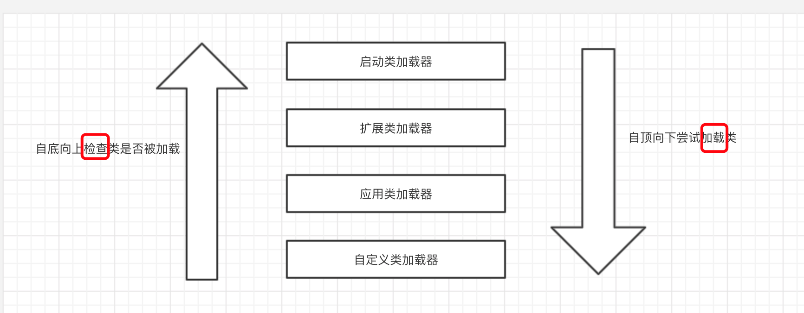
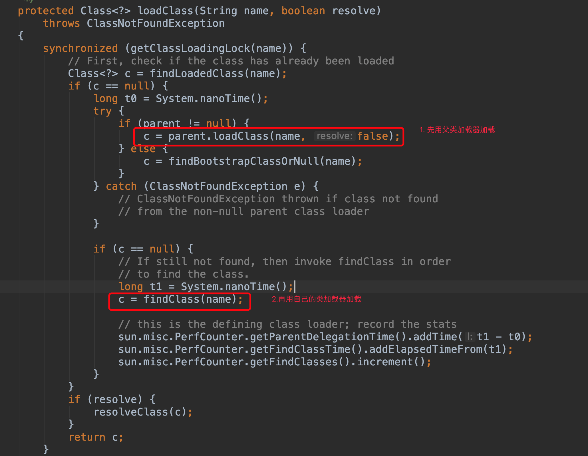

原文出处:本文由博客园博主mousycoder提供。
原文连接:https://www.cnblogs.com/mousycoder/p/11528992.html
原文连接:https://www.cnblogs.com/mousycoder/p/11528992.html
方法
- public Class<?> loadClass(String name) throws ClassNotFoundException
通过类名发挥这个类的Class实例 - protected final Class<?> defineClass(byte[] b,int off,int len)
根据给定的字节码流 b，off 和 len 参数表示实际的 class 信息在byte 数组中的位置和长度，其中 byte 数组 b是 classloader 从外部获取的 - protected Class<?> findClass(String name)throws ClassNotFoundException
查看一个类 protected final Class<?> findLoadedClass(String name)
分类
- BootStrap ClassLoader
- Extension ClassLoader
AppClassLoader

启动类加载器负责加载系统的核心类（rt.jar的java类），扩展类加载器加载 %JAVA_HOME/lib/ext/*.jar中的类，应用类加载器用于加载用户类 (classpath)，自定义类加载器加载一些特殊路径的类(自定义classloader)双亲委托
- 当前 classloader 首先从自己已经加载的类中查询是否此类已经加载，如果已经加载了则直接返回原来已经加载的类
- 当前 classloader 的缓存中没有找到被加载的类的时候，委托父类加载器去加载，父类加载器采用同样的策略，首先查下自己的缓存，然后委托父类去加载，一直到 bootstrap classloader
- 当所有的父类加载器都没有加载的时候，再由当前的类加载器加载，并将其放入自己的缓存中，下次请求的时候直接返回
- 一直循环重复
作用
- 各个类加载器的基础类统一

jar -cvf test.jar HelloLoader.class 把class打包成jar
Extension ClassLoader
例子：在 ext 路径下放一个自己 jar 包并加载
package com.mousycoder.server;
public class HelloWorld {
public static void main(String[] args) {
System.out.println("Hello World!");
}
}
idea 通过 structs->artifacts->jar 然后 build-> build artifacts->build 生成 helloworld.jar
放到 /Library/Java/JavaVirtualMachines/jdk1.8.0.jdk/Contents/Home/jre/lib/ext
package com.mousycoder.mycode.thinking_in_jvm;
import java.lang.reflect.Method;
/**
* @version 1.0
* @author: mousycoder
* @date: 2019-09-06 10:35
*/
public class ExtClassLoader {
public static void main(String[] args) throws ClassNotFoundException {
System.out.println(System.getProperty("java.ext.dirs"));
Class<?> helloClass = Class.forName("com.mousycoder.server.HelloWorld");
System.out.println(helloClass.getClassLoader());
}
}
输出
/Users/mousycoder/Library/Java/Extensions:/Library/Java/JavaVirtualMachines/jdk1.8.0.jdk/Contents/Home/jre/lib/ext:/Library/Java/Extensions:/Network/Library/Java/Extensions:/System/Library/Java/Extensions:/usr/lib/java
sun.misc.Launcher$ExtClassLoader@610455d6可以看出是 ExtClassLoader 加载 java.ext.dirs 目录
自定义类加载器
package com.mousycoder.mycode.thinking_in_jvm;
import java.io.ByteArrayOutputStream;
import java.io.IOException;
import java.nio.file.Files;
import java.nio.file.Path;
import java.nio.file.Paths;
/**
* @version 1.0
* @author: mousycoder
* @date: 2019-09-06 11:13
*/
public class MyClassLoader extends ClassLoader {
private final static Path DEFAULT_CLASS_PATH = Paths.get("","/Users/mousycoder/My");
private final Path classDir;
public MyClassLoader(){
super();
this.classDir = DEFAULT_CLASS_PATH;
}
public MyClassLoader(String classDir){
super();
this.classDir = Paths.get(classDir);
}
public MyClassLoader(String classDir, ClassLoader parent){
super(parent);
this.classDir = Paths.get(classDir);
}
@Override
protected Class<?> findClass(String name) throws ClassNotFoundException {
try {
byte[] classBytes = this.readClassBytes(name);
if (null == classBytes || 0 == classBytes.length){
throw new ClassNotFoundException("can not load the class" + name);
}
return this.defineClass(name,classBytes,0,classBytes.length);
} catch (IOException e){
e.printStackTrace();
}
return null;
}
private byte[] readClassBytes(String name) throws ClassNotFoundException, IOException {
String classPath = name.replace(".","/");
Path classFullPath = classDir.resolve( "HelloWorld1.class");
if (!classFullPath.toFile().exists()){
throw new ClassNotFoundException("The class" + name + "mpt found");
}
try (ByteArrayOutputStream baos = new ByteArrayOutputStream()){
Files.copy(classFullPath,baos);
return baos.toByteArray();
} catch (IOException e){
throw new ClassNotFoundException("load the class " + name + "occur error",e);
}
}
@Override
public String toString() {
return "My ClassLoader";
}
}
package com.mousycoder.mycode.thinking_in_jvm;
/**
* @version 1.0
* @author: mousycoder
* @date: 2019-09-06 11:34
*/
public class MyClassLoaderTest {
public static void main(String[] args) throws ClassNotFoundException {
MyClassLoader classLoader = new MyClassLoader();
Class<?> class1 = classLoader.loadClass("com.mousycoder.mycode.thinking_in_jvm.HelloWorld1");
System.out.println(class1.getClassLoader());
}
}
package com.mousycoder.mycode.thinking_in_jvm;
/**
* @version 1.0
* @author: mousycoder
* @date: 2019-09-06 11:46
*/
public class HelloWorld1 {
public static void main(String[] args) {
System.out.println("Hello world1 ");
}
}
把helloword1变成class放到/Users/mousycoder/My目录下即可
输出 My ClassLoader 代表 自定义类加载器加载了该类
上下文类加载器

作用
打破双亲委托机制，让上层父类加载器可以使用子类的加载器加载对象，比如Spi中的接口类在系统加载器中，但是实现类在应用加载器中
Tomcat 类加载器
目的
- 保证每个应用的类库独立隔离（即使同限定名不同版本的）
- 保证相同类库相同版本的类库共享
- 保证容器自身的类库和程序独立
加载顺序
- bootstrap 引导类加载器
- system 系统类加载器
- 应用类加载器 WEB-INF/classes
- 应用类加载器 WEB-INF/lib
- common 类加载器 CATALINA/lib